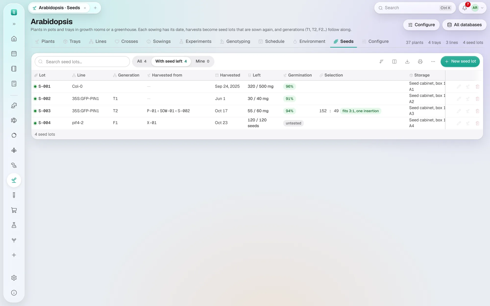

你的数据库
植物与大田作物
播种批次、托盘或小区，以及收获后再次播种的种子，一代接一代。
侧边栏的 添加数据库 （Add database）为植物提供两个起点。植物 适用于生长室、人工气候箱或温室里的盆钵和托盘，就像拟南芥、烟草或水稻实验室那样。大田作物 适用于试验田中的小区，先在苗圃（育苗床）育苗，再移栽。两者都记录播种和收获，而不是出生和死亡，也没有性别。
它记录什么
- 植株 — 每株一行，或每组植株一行并记数量。播种 是播种日期，年龄是播种后的天数；把状态设为已收获时会填上 收获 / 移除 日期。
- 托盘（或 小区）— 植株所在的位置，放在生长室、温室或试验田的网格上。试验田就是小区组成的网格，正如笼架是笼子组成的网格： 设置行数和列数，再把每个小区拖到对应位置。
- 品系 — 记录遗传背景（Col-0 或品种）、来源和保种编号、筛选标记、是否 转基因 及对应的 生物安全许可， 以及 构建体：转化所用的质粒，从质粒数据库中选择并链接过去。
- 播种批次 — 同一次播下的一批，记录日期、播了多少、来自哪个种子批次、代数（T2、F3）以及阶段： 种子、低温层积中、幼苗、已移栽、开花、结实、已收获；大田作物还有在苗圃。在苗圃中的播种批次可以把苗圃设为它的位置。
- 杂交 — 两个亲本品系、授粉日期和采种日期。
- 环境 — 每个生长室或试验田的读数：温度、湿度、光照和日长。
种子批次
种子 （Seeds）标签页列出所有种子批次，尚有种子的排在前面。每个批次都有品系和代数、收获来源、收获量和剩余量（单位为 mg、g、粒、管或袋）、 存放位置、发芽率和筛选平板结果。
- 收种 （Harvest seed）— 在植株、播种批次或杂交上点麦穗按钮，会打开一个已填好的新批次：品系、今天的日期和代数。 自交植株收获的种子比植株晚一代（T1 植株收获 T2 种子）；杂交收获的种子为 F1。保持勾选 将收获来源标记为已收获， 植株就会被标记为已收获并填上日期，杂交则被标记为已采集。
- 播种 （Sow）— 在种子批次上点幼苗按钮，会在播种批次标签页中新建一次播种。它带入该批次的品系和代数，取用种子量 中填写的数量会从剩余量中扣除（按批次自己的单位）。单位为粒时，还会填上播种数量。取用量不能超过剩余量。
- 收获自 显示批次的来历，由近及远：它来自哪株植株、该植株的播种批次、那次播种所用的批次，一直追溯到最初的批次。 点其中的批次即可跳到该批次。
- 标签 （Labels）为每个尚有种子的批次打印标签，可贴在管子或纸袋上，带有打开该批次的二维码。
- 新建种子批次 （New seed lot）用于已有的种子：来自保种中心、同事或抽屉里。

筛选平板
把 T2 批次种在筛选培养基上（卡那霉素、潮霉素、Basta），填写 抗性苗 和 敏感苗 的数量。筛选 列会按 p = 0.05 的 χ² 检验说明结果： 符合 3:1，单拷贝插入；符合 15:1，两个插入位点；全部抗性：纯合（30 株以上）；或两者都不符合，或需要多计数才能判断。 鼠标悬停可看到 χ² 值。
日程
日程 按每次播种后的天数计算：3 天后结束低温层积，第 7 天统计发芽，第 14 天移栽，第 70 天收种（长日照下的拟南芥）。 大田作物在第 30 天从苗圃移栽，第 90 天开花，第 120 天收获。库存种子每两年提醒一次发芽检测。 在 配置 → 日程规则 里按你的物种修改；首页会显示到期事项。
用你自己的说法
这里的一切都是 配置 （Configure）中的设置：植株、托盘、生长室和播种批次的叫法；两个日期的名称（起始日期名称、结束日期名称）； 播种批次经历的 阶段；场所类型（生长室、温室、苗圃、试验田）；种子数量的单位；以及 幼龄截至 和 老龄始于， 这两个天数决定植株编号前圆点的颜色：幼苗为蓝色，之后绿色，再后红色。还可以给植株、托盘、品系、播种批次、杂交或种子批次添加自己的列， 方法见其他任意物种。
疑难解答
没有种子标签页
这个数据库建于种子批次功能之前，或建时没有勾选。在 配置 中勾选 种子库存 并保存。
收种得到的代数不对
代数取自植株所在的播种批次；如果那次播种没有代数，批次也没有。直接在批次中填写，并给播种批次补上代数，下一次收获就会顺延。
批次上的播种按钮是灰色的
这个批次属于别人：取用种子会改动它，所以和其他记录一样受权限限制。请找批次的主人或管理员，或者新建播种批次时在 播种所用批次 中选择它，但不填取用量。
播种时提示“只剩 5 mg”
批次剩余的种子少于 取用种子量。检查数量；如果批次后来补充过种子，就修改它的 剩余。